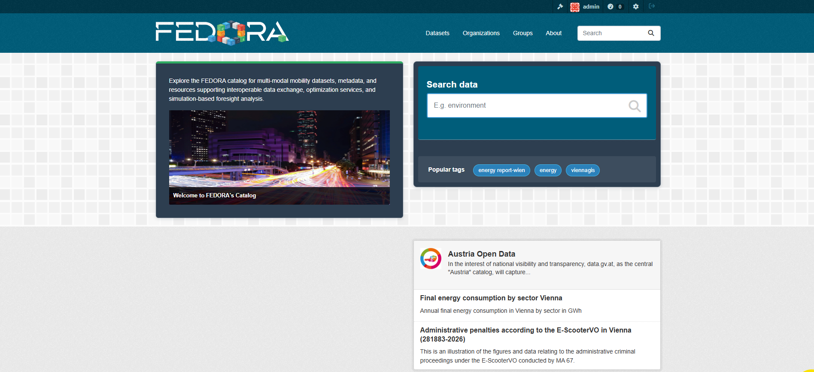
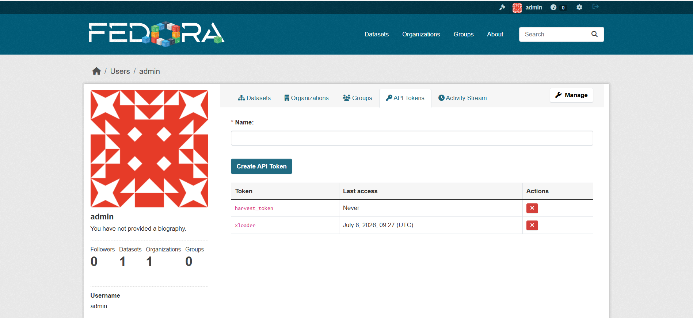
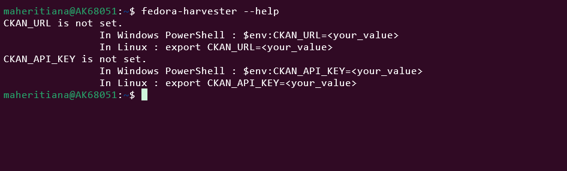
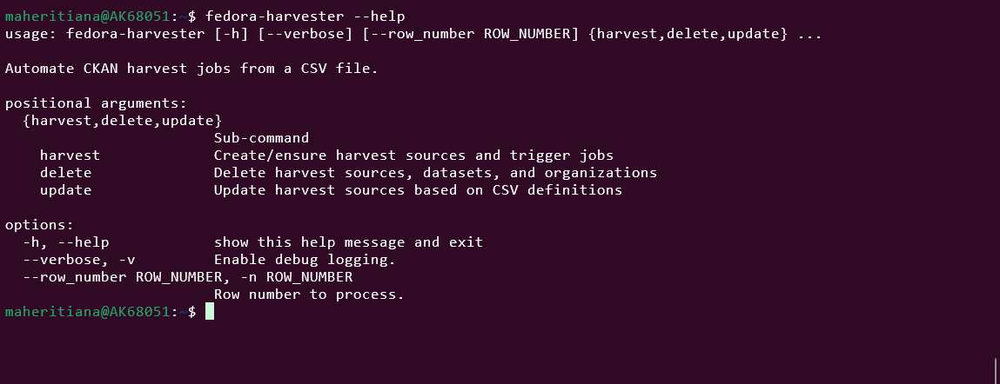
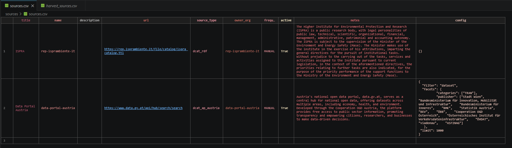
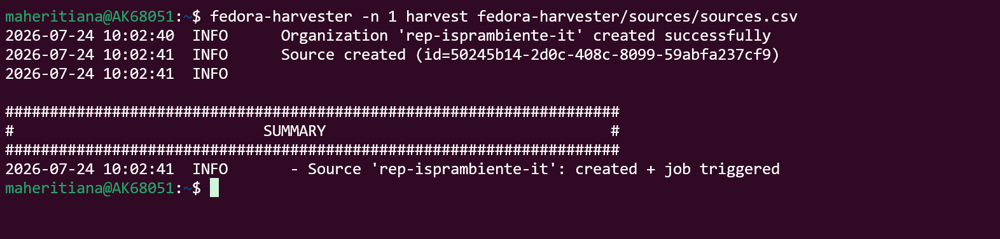
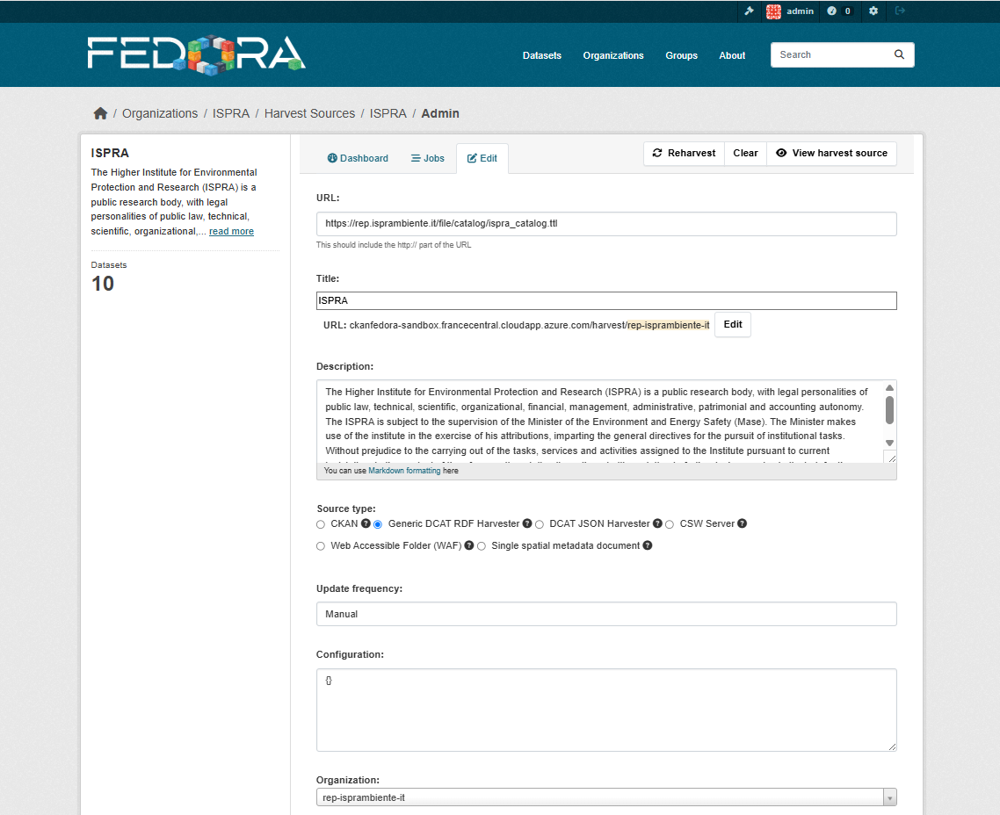

How to Harvest¶
Harvesting can be configured either manually through the CKAN graphical interface or automatically using the fedora-harvester tool. This guide covers the automatic approach, which offers greater efficiency and reproducibility.
Prerequisites¶
Before proceeding, ensure that you have completed the Installation steps and have access to the Data Catalogue platform (based on CKAN).
The following image shows the home page of the Data Catalogue:

Procedure¶
1. Obtain an API Token¶
An API token is required to authorise remote calls to the Data Catalogue.
To generate a token, navigate to Admin → API Token, as illustrated below.

2. Configure fedora-harvester¶
Once the installation is complete, verify that fedora-harvester is installed and functioning correctly.
Run the following command:
You should see the output below, which confirms that the tool is operational but not yet configured:

Complete the initial configuration by running the command provided in the output.
Once configured, run fedora-harvester --help again. The full list of available options should now be displayed:

3. Prepare the CSV Source File¶
All required information for defining organisations and data sources must be provided in a CSV file.

The example above contains two sources to harvest.
As shown in the fedora-harvester --help output, you can harvest either all sources or a specific row.
Harvesting a Specific Row¶
To harvest a single row from the CSV file, run:

Harvesting All Rows¶
To harvest all rows in the CSV file, run:
Result¶
Upon successful completion, all information defined in the CSV source file will be reflected in the Data Catalogue. The following image shows the expected result:

Conclusion¶
This guide has walk you through the complete harvesting workflow using fedora-harvester — from obtaining an API token and configuring the tool to executing harvest jobs. By leveraging this automated approach, you can efficiently manage and update your Data Catalogue with minimal manual intervention.